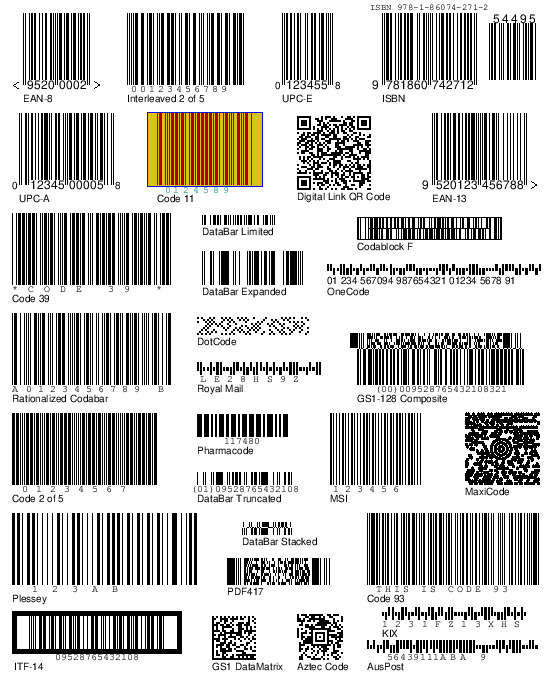

Barcode Writer in Pure Postscript generates all barcode formats entirely within PostScript so that the process of converting the input data into the printed output can be performed by the printer or RIP itself. This is ideal for variable data printing (VDP) and avoids the need to re-implement the barcode generation process whenever your language needs change.
It makes including any barcode within a PostScript document as simple as inserting the following directive:
0 0 moveto (978-1-86074-271) (includetext) /isbn /uk.co.terryburton.bwipp findresource execBWIPP supports all major barcode symbologies including:
EAN-13 (EAN, UCC-13, JAN, JAN-13, EAN-13+2, EAN-13+5, EAN-99), EAN-8 (UCC-8, JAN-8, EAN-8+2, EAN-8+5, EAN-Velocity), UPC-A (UPC, UCC-12, UPC-A+2, UPC-A+5), UPC-E (UPC-E0, UPC-E1, UPC-E+2, UPC-E+5), ISBN (ISBN-13, ISBN-10, Bookland EAN-13), ISMN, ISSN, EAN-5 & EAN-2 (EAN/UPC add-ons), GS1 DataBar Omnidirectional (RSS-14), GS1 DataBar Stacked (RSS-14 Stacked), GS1 DataBar Stacked Omnidirectional (RSS-14 Stacked Omnidirectional), GS1 DataBar Truncated (RSS-14 Stacked), GS1 DataBar Limited (RSS Limited), GS1 DataBar Expanded (RSS Expanded), GS1 DataBar Expanded Stacked (RSS Expanded Stacked), GS1-128 (UCC/EAN-128, EAN-128, UCC-128), SSCC-18 (EAN-18, NVE), EAN-14 (UCC-14), ITF-14 (UPC SCS), QR Code (Quick Response Code, Micro QR Code), GS1 QR Code, Data Matrix (Data Matrix ECC 200), GS1 DataMatrix, Aztec Code (Compact Aztec Code, Aztec Runes), PDF417 (Truncated PDF417), MicroPDF417, MaxiCode (UPS Code, Code 6), Codablock F, Code 16K (USS-16K), Code 49 (USS-49), Code One (Code 1, Code 1S), USPS POSTNET, USPS PLANET, USPS Intelligent Mail (USPS OneCode), USPS FIM, Royal Mail (RM4SCC, CBC), Royal TNT Post (KIX), Japan Post, Australia Post, Deutsche Post Identcode (DHL Identcode), Deutsche Post Leitcode (DHL Leitcode), Pharmacode (Pharmaceutical Binary Code), Two-track Pharmacode (Two-track Pharmaceutical Binary Code), Italian-Pharmacode (Code 32, IMH), PZN (Pharmazentralnummer, PZN-8, PZN-7), Code 39 (Code 3 of 9, LOGMARS, Alpha39, USD-3, USD-2, USS-39), Code 39 Extended (Code 39 Full ASCII), Code 93 (USD-7, USS-93), Code 93 Extended (Code 93 Full ASCII), Code 128 (Code 128A, Code 128B, Code 128C, USD-6, USS-128), Code 25 (Code 2 of 5, Industrial 2 of 5, IATA 2 of 5, Data Logic 2 of 5, Matrix 2 of 5, COOP 2 of 5), Interleaved 2 of 5 (ITF, Code 2 of 5 Interleaved, USD-1, USS-Interleaved 2 of 5), Code 11 (USD-8), Codabar (Rationalized Codabar, Ames Code, NW-7, USD-4, USS-Codabar, Monarch, Code 2 of 7), Plessey (Anker Code), MSI Plessey (MSI, MSI Modified Plessey), Telepen (Telepen Alpha, Telepen Full ASCII, Telepen Numeric), Channel Code, PosiCode (PosiCode A, PosiCode B), BC412 (BC412 SEMI, BC412 IBM), GS1 Composite Symbols (EAN-13 Composite, EAN-8 Composite, UPC-A Composite, UPC-E Composite, GS1 DataBar Omnidirectional Composite, GS1 DataBar Stacked Composite, GS1 DataBar Stacked Omni Composite, GS1 DataBar Truncated Composite, GS1 DataBar Limited Composite, GS1 DataBar Expanded Composite, GS1 DataBar Expanded Stacked Composite, GS1-128 Composite), HIBC barcodes (HIBC Code 39, HIBC Code 128, HIBC Data Matrix, HIBC PDF417, HIBC MicroPDF417, HIBC QR Code, HIBC Codablock F)
If it doesn't contain the format or feature you are looking for then take a look at the outstanding features list, make a request via the issue tracker and check back soon.
The resource is modular so you need only include the definitions for the symbologies that you will produce within your target document or labels, making the resource very lightweight.
Since this resource is written in PostScript and interpreted within the virtual machine of a printer it is compatible with virtually any hardware, operating system and application platform, for example Windows 95/XP on i386, Mac OS X/Linux on Power PC, Solaris on SPARC, and OpenVMS on Alpha AXP.
For an online demonstration of the code's barcode generation capabilities take a look at this web-based front end.
Here is a sample image obtained by running the current version of the code through Ghostscript and ImageMagick.

The anticipated use of the code is to include the procedural definitions for the relevant encoder and renderer within the prologue of your own PostScript documents. You can use these to create and place your own barcodes as demonstrated in the samples within the quick guide and PostScript code. I usually use the PostScript code within a template file into which I substitute the barcode data string as a parameter using a language like Perl, Java or C++.
If you have a PostScript printer then you can avoid the need to embed the code within each of your documents by installing the code within your printer's PostScript virtual machine which will give the device barcode production capabilities for all subsequent jobs until it is reset. This effectively converts a commodity laser printer into a very capable barcode printer all through the use of uploaded barcode software, no font chips required.
Anybody is free to use and develop this code as they see fit, under the terms of the permissive MIT/X-Consortium license, which requires that developers attribute any derivative code to this project in both the source code and documentation. As such I take no liability for its use or misuse.
The support is provided via the project mailing list where you will normally find any questions or difficulties resolved quickly. Please do not email the author directly unless you are happy for your email to be reposted to the list.
The most complete reference for users and developers is the wiki.
The current release is available for download in a number of formats from here.
BWIPP is essentially a set of generic PostScript Level 2 named resources that are provided in four flavours for ease of use. The one to use depends on how you intend to deploy the library.
"Packaged" or "unpackaged": The named resources have been packaged for DSC conformance, portability and ease of distribution. You will most likely want to use a packaged flavour in production, however the unpackaged versions of the resources are useful for understanding the code, developing the library and debugging.
"Separate files" or "monolithic": The resource is provided as separate files that are formatted for direct use by Adobe Distiller, GhostScript, a printer hard disk or a document manager. The monolithic flavours contain all of the resources in a single file that is suitable for inclusion in the Prolog section of a PostScript document template or installing to a printer's initial job VM.
This leads to the following set of four files.
For production use:
For BWIPP development:
Browse or checkout the source code from the repository or view the changelog.
Stay up-to-date by following the releases feed.
Many applications embed or plugin this PostScript resource thereby making available to their users a complete or partial implementation of the resource's features. The following is a list of known open source applications that make BWIPP barcodes available to their intended audience without the need to manipulate direct PostScript:
There are a number of different sample scripts and front-ends that make use of the project in the contrib section of the repository.
For general discussion and help subscribe to the support and development mailing list.